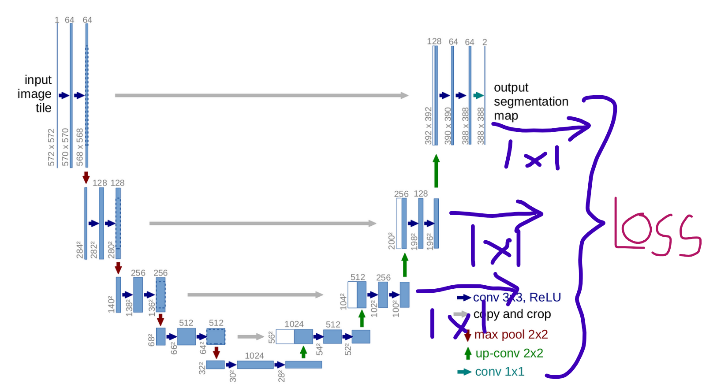

Integrating Deep Supervision in Segmentation Models Pytorch (smp)?
segmentation
PyTorch
Tutorial code of how I integrated Deep Supervision Loss generation setup with Segmentation Models PyTorch Framework, which could be Directly us with Minimal changes
Published
March 31, 2023
In this Notebook - I share my understanding and my Work related to Deep Supervision in Models and Loss Function, I feel Deep Supervision is Sometimes Useful in the cases where the segmentation part bit hard to get detected.
With my own understanding and thinking I try to implement Deep Supervision.
As it is conversion of SMP’s Unet Code to Deep Supervision. . . I might have made mistakes, or maybe all of my work is a mess or may be its Evolutionary for Kaggle- Let me know in the comments. 
Here directly copied the Decoder code of Segmentation Model PyTorch Unet. And in the class UnetDecoder I simply also appended the outputs in the Decoder and Passed it also through different Segmentation heads according to their Channels.
My Output basically goes from Larger Image (prediction) to smaller outputs of unet.
example :
torch.Size([1, 1, 384, 384])
torch.Size([1, 1, 192, 192])
torch.Size([1, 1, 96, 96])
torch.Size([1, 1, 48, 48])
torch.Size([1, 1, 24, 24])
import torchimport torch.nn as nnimport torch.nn.functional as Ffrom segmentation_models_pytorch.base import modules as mdfrom segmentation_models_pytorch.encoders import get_encoderfrom segmentation_models_pytorch.base import ( SegmentationModel, SegmentationHead,)import segmentation_models_pytorch as smpclass DecoderBlock(nn.Module):def__init__(self, in_channels, skip_channels, out_channels, use_batchnorm=True, attention_type=None, ):super().__init__()self.conv1 = md.Conv2dReLU( in_channels + skip_channels, out_channels, kernel_size=3, padding=1, use_batchnorm=use_batchnorm, )self.attention1 = md.Attention(attention_type, in_channels=in_channels + skip_channels)self.conv2 = md.Conv2dReLU( out_channels, out_channels, kernel_size=3, padding=1, use_batchnorm=use_batchnorm, )self.attention2 = md.Attention(attention_type, in_channels=out_channels)def forward(self, x, skip=None): x = F.interpolate(x, scale_factor=2, mode="nearest")if skip isnotNone: x = torch.cat([x, skip], dim=1) x =self.attention1(x) x =self.conv1(x) x =self.conv2(x) x =self.attention2(x)return xclass CenterBlock(nn.Sequential):def__init__(self, in_channels, out_channels, use_batchnorm=True): conv1 = md.Conv2dReLU( in_channels, out_channels, kernel_size=3, padding=1, use_batchnorm=use_batchnorm, ) conv2 = md.Conv2dReLU( out_channels, out_channels, kernel_size=3, padding=1, use_batchnorm=use_batchnorm, )super().__init__(conv1, conv2)class UnetDecoder(nn.Module):def__init__(self, encoder_channels, decoder_channels, n_blocks=5, use_batchnorm=True, attention_type=None, center=False, ):super().__init__()if n_blocks !=len(decoder_channels):raiseValueError("Model depth is {}, but you provide `decoder_channels` for {} blocks.".format( n_blocks, len(decoder_channels) ) )# remove first skip with same spatial resolution encoder_channels = encoder_channels[1:]# reverse channels to start from head of encoder encoder_channels = encoder_channels[::-1]# computing blocks input and output channels head_channels = encoder_channels[0] in_channels = [head_channels] +list(decoder_channels[:-1]) skip_channels =list(encoder_channels[1:]) + [0] out_channels = decoder_channelsif center:self.center = CenterBlock(head_channels, head_channels, use_batchnorm=use_batchnorm)else:self.center = nn.Identity()# combine decoder keyword arguments kwargs =dict(use_batchnorm=use_batchnorm, attention_type=attention_type) blocks = [ DecoderBlock(in_ch, skip_ch, out_ch, **kwargs)for in_ch, skip_ch, out_ch inzip(in_channels, skip_channels, out_channels) ]self.blocks = nn.ModuleList(blocks)def forward(self, *features): features = features[1:] # remove first skip with same spatial resolution features = features[::-1] # reverse channels to start from head of encoder head = features[0] skips = features[1:] x =self.center(head) out = []for i, decoder_block inenumerate(self.blocks): skip = skips[i] if i <len(skips) elseNone x = decoder_block(x, skip) out.append(x)return out[::-1]class SegmentationModel(nn.Module):def__init__(self, encoder, encoder_weights=None, encoder_depth=5, in_channels=3, decoder_use_batchnorm: bool=True, decoder_channels = (256, 128, 64, 32, 16), decoder_attention_type =None, classes =1 ):super().__init__()self.encoder = get_encoder( encoder, in_channels=in_channels, depth=encoder_depth, weights=encoder_weights, )self.decoder = UnetDecoder( encoder_channels=self.encoder.out_channels, decoder_channels=decoder_channels, n_blocks=encoder_depth, use_batchnorm=decoder_use_batchnorm, center=False, attention_type=decoder_attention_type, )self.segmentation_head = nn.ModuleList()for channel in decoder_channels[::-1]:self.segmentation_head.append( SegmentationHead( in_channels=channel, out_channels=classes, activation=None, kernel_size=3, ) )def forward(self,x): features =self.encoder(x) decoder_output =self.decoder(*features) masks = []for i,seg_head inenumerate(self.segmentation_head): masks.append(seg_head(decoder_output[i]))return masksin_ = torch.zeros((1,3,384,384))model = SegmentationModel("resnet18")model.to("cuda")print("The following are the expected outputs")for i in model(in_.to("cuda")):print(i.shape)
The following are the expected outputs
torch.Size([1, 1, 384, 384])
torch.Size([1, 1, 192, 192])
torch.Size([1, 1, 96, 96])
torch.Size([1, 1, 48, 48])
torch.Size([1, 1, 24, 24])
This is My Custom Loss Function that takes output from all Decoder block and interpolates the Ground Truth(Labels/Targets) and calculates the loss.
The “w” weight is actually 1/2^(index of input) according to which more importance is given to the Main Prediction and smaller and smaller weight is given to deeper Decoder outputs.
class Deep_Supervised_Loss(nn.Module):def__init__(self):super().__init__()self.loss = smp.losses.TverskyLoss(mode="binary",from_logits=False,)def forward(self, input, target): loss =0# print(type(input))for i, img inenumerate(input): w =1/ (2** i) label = F.interpolate(target,size=img.shape[2:]) l =self.loss(torch.sigmoid(img), label) loss += l * wreturn loss
Good News is all SMP’s and timm’s Pretrained weight work here
ENCODER ="resnet18"ENCODER_WEIGHTS ="imagenet"
Only thing we need to take care is we must get Segmetation Model Class instead of smp.unet of library to use Deep Supervision
model = SegmentationModel(encoder=ENCODER,encoder_weights=ENCODER_WEIGHTS)